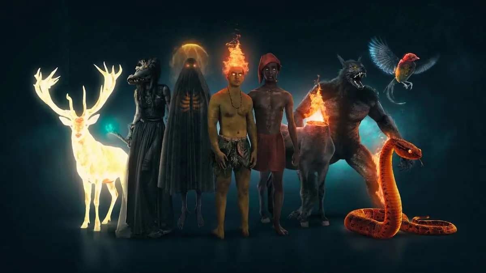

Sobre o Folclore
O folclore brasileiro é o conjunto de realizações que fazem parte da cultura popular brasileira, podendo incluir os contos, lendas, canções, ritmos, músicas, festas populares, jargões, etc.
O nosso folclore possui influências da cultura europeia, africana e indígena, sendo resultado da diversidade cultural aqui existente. Isso sem falar nos personagens folclóricos, como o Saci-Pererê, Curupira, Boitatá, Iara, entre outros.
Ele ficou conhecido no Brasil a partir do século XX, mas as raízes dessa pesquisa em nosso país remontam ao século XIX. Isso foi possível graças à influência do Romantismo que, esteve associada com movimentos nacionalistas e procurava ressaltar elementos da cultura nacional.
Essa ideia foi reforçada com o Modernismo, artística e literária que esteve em evidência, no Brasil, no começo do século XX. O movimento modernista tinha ideais ufanistas e idealizava o interior do Brasil como local da verdadeira brasilidade.
